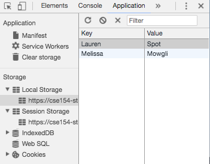
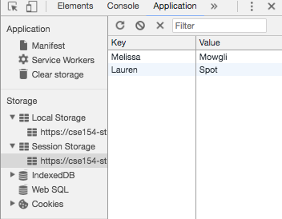
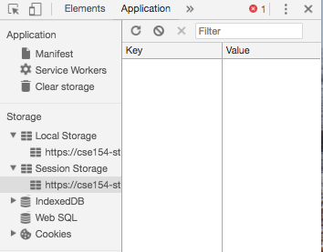

Lecture 15 - Cookies
And fetch with POST, localStorage, sessionStorage,
indexDB and Dexie....
Quick check
By the end of today you should be able to decide which of these technologies are best in each situation
- cookies
- localStorage
- sessionStorage
- indexDB/Dexie
- Storing the status a user has successfully logged into a website, but ensuring the log in status is deleted when they close the browser tab.
- Keeping track of which emojis are used on the client only.
- Storing a value in the browser that is accessible from the server. "
- Temporarily retaining large pieces of information that are being downloaded from a website, but most of your users primarily use mobile phones to access the site.
HTTP and State
HTTP is a stateless protocol; it simply allows a browser to request a single document from a web server
Once the document has been sent to the client, the server does not keep track of any information about what was sent (other than maybe in a log file of the transaction).
Stateful client/server interaction
Sites like amazon.com seem to "know who I am." How do they do this? How does a client uniquely identify itself to a server, and how does the server provide specific content to each client?
When has this happened to you? What sites were involved?
Today we'll learn some technologies that are used to store "state" on your client machine.
- Sometimes state is kept simply to aid in the user experience.
- Sometimes state is passed back to the server from the client... and sometimes that happens when you least expect it.
Cookies vs. Local Storage
| Cookies | Local Storage | |
|---|---|---|
| Size | 4kb | 10mb |
| Accessible From | Any window | Any window |
| Expires | Manually Set | Never |
| Storage Location | Browser and Server | Browser Only |
| Sent with HTTP Requests | Yes | No |
Cookies have been around longer than Local/Session Storage
Different types of cookies (preferences, tracking, etc.) and these are usually smaller
What is a cookie?
- cookie: a small amount of information stored within the computer browser
- cookies have many uses:
- authentication
- user tracking
- maintaining user preferences, shopping carts, etc.
A "tracking cookie"
- an advertising company can put a cookie on your machine when you visit one site, and see it when you visit another site that also uses that advertising company
- therefore they can tell that the same person (you) visited both sites
- can be thwarted by telling your browser not to accept "third-party cookies"
How cookies are set and retrieved
- Client side JS:
- JavaScript commands can set and retrieved using
document.cookie
- JavaScript commands can set and retrieved using
- Server Side (Node/Express):
- When the browser requests a page, the server may send back a cookie(s) with it to store on the client
- If your server has previously sent any cookies to the browser, the browser will send them back on subsequent requests to remind the server who is connecting to it.
Facts about cookies
- Cookies are only data, not program code.
- Cookies can have set expiration dates.
- Cookies help websites remember who you are (and if you are logged in).
- Cookies CAN be used to track your viewing habits on a particular site.
Setting/Getting Cookies in Express
You can set/send/clear cookies back to the client with the res (Response) object's res.cookie() and res.clearCookie() functions
res.cookie(name, value, { expires : new Date(Date.now() + 10000) }); // expires in 10 secondsres.cookie(name, value, { maxAge : 10000 }); // also expires in 10 secondsres.cookie("logged_in", "true", { maxAge : 10000 });You can get the client's cookies using the req (Request) object's req.cookies property (an object of key/value pairs).
console.log(req.cookies); // { logged_in : "true" }Cookies in JavaScript: Retrieving
- To get a cookie use
let cookies = document.cookie; -
This will return a semicolon separated list of all current name=value pairs
E.g.,"lastItemBought=apples; numberSiteVisitsToday=57" - You have to retrieve the values from the string by parsing yourself.
Cookies in JavaScript: Clearing
To delete a cookie you need to set it's expiration time to be before now
document.cookie = name + '=; expires=Thu, 01 Jan 1970 00:00:01 GMT;';JavaScript (example)
Cookies Recap
-
...delicious, particularly with chocolate chips. - ...are a way to store information or the state of your website.
- ...can be set so they expire after a time, or after you close the page.
- ...are kind of a pain to retreive, if there are many cookies that are set already.
- ...they only allow up to only 4 KB of data storage.
- ...they can be used by malicious sites to "spy" on browsing behavior.
localStorage and sessionStorage
localStorage and sessionStorage

From Wikipedia
{kind=link}
localStorage is a document property that allows
you to save information across browser sessions (i.e after you close the browser)
sessionStorage is a document property that allows
you to save information for this session only, and will be cleared when
the page is closed.
Both localStorage and sessionStorage
inherit from Storage class.
Name/value pairs (seen in cookies and Storage) are supported by most every browser
Storage
There are three methods we're interested in from Storage
| method | description |
|---|---|
| setItem(keyName, keyValue) | Sets the keyName location in localStorage to be keyValue |
| getItem(keyName) | Retrieves the keyValue in localStorage associated with keyName |
| removeItem(keyName) | Removes the keyName location in localStorage |
localStorage example
window.localStorage.setItem("Melissa", "Mowgli");
window.localStorage.setItem("Lauren", "Spot");
window.localStorage.setItem("Jacki", "Moss");
let bestPet = window.localStorage.getItem("Lauren");
window.localStorage.removeItem("Jacki");JavaScript (example)
before closing the browser tab
after closing the browser tab
sessionStorage example
Similarly for sessionStorage
window.sessionStorage.setItem("Melissa", "Mowgli");
window.sessionStorage.setItem("Lauren", "Spot");
window.sessionStorage.setItem("Jacki", "Moss");
let bestPet = window.sessionStorage.getItem("Lauren");
window.sessionStorage.removeItem("Jacki");JavaScript (example)
before closing the browser tab
after closing the browser tab
indexDB
indexDB
cookies, localStorage,
sessionStorage can only store small amounts of
data
indexDB is a "a low-level API for client-side storage
of significant amounts of structured data, including files/blobs"
Look down through the slides if you want to know more...
indexDB usage
There are many flavors types of indexDB - so apparently you have to cover your bases with creating the database for your page:
// This works on all devices/browsers, and uses
// IndexedDBShim as a final fallback
let indexedDB = window.indexedDB || window.mozIndexedDB ||
window.webkitIndexedDB || window.msIndexedDB ||
window.shimIndexedDB;
// Open (or create) the database
let openDB = indexedDB.open(<dbname>, <version>);JavaScript (template)
// This works on all devices/browsers,
// and uses IndexedDBShim as a final fallback
let indexedDB = window.indexedDB || window.mozIndexedDB ||
window.webkitIndexedDB || window.msIndexedDB ||
window.shimIndexedDB;
// Open (or create) the database
let openDB = indexedDB.open("terms", 1);JavaScript (example)
indexDB usage
You need to set callbacks on the new database object, so once the database is created, the tables (schema) can be created.
openDB.onupgradeneeded = function() {
let db = openDB.result;
let store = db.createObjectStore("terms", {keyPath: "term"});
let index = store.createIndex("definition", "definition", { unique: false });
};
openDB.onsuccess = function() {
console.log("Database created!");
}JavaScript (example)
indexDB setting values
// Start a new transaction
let db = openDB.result;
let tx = db.transaction("terms", "readwrite");
let store = tx.objectStore("terms");
let index = store.index("definition");
// get the term and definition from the user
store.put({key: userTerm, definition: userDef});
// Close the db when the transaction is done
tx.oncomplete = function() {
db.close();
};JavaScript (example)
indexDB getting values
// assume the variable term has been set
let getValue = store.get(term);
getValue.onsuccess = function() {
alert(getValue.result.definition);
};
getValue.onerror = function() {
// error handling here
};JavaScript (example)
Phew... that was a lot of work. And confusing too
Dexie to the rescue
Dexie
Dexie is a wrapper around indexDB that makes it MUCH easier to use.
// create the database (module global)
let db = new Dexie(<name of database>);
window.addEventListener("load", init);
function init () {
// set up the schema
db.version(1).stores({
// this is the table with the columns that are to be indexed.
<tableName>: '<column1>, <column2>...'
});
};JavaScript (template)
let db = new Dexie("definitions");
window.addEventListener("load", init);
function init () {
// set up the schema
db.version(1).stores({
terms: 'term,definition'
});
};JavaScript (example)
Dexie put
Putting an item in a table is pretty straight forward:
db.<tableName>.put({"column1": <value1>, "column2": <value2>, ...});JavaScript (template)
db.terms.put({"term": term, "definition": definition});JavaScript (example)
Dexie get
There are two ways to get information back out of a table, using either a
callback, or a Promise
// get with a callback
db.<tableName>.get(<key>, function (item) {
// do something here
});
// get with a Promise.
db.<tableName>.get(<key>).then (function (item) {
// do something here
}); JavaScript (template)
db.terms.get(term, function (item) {
console.log("Callback: Item at " + term + " is " + item.definition);
});
db.terms.get(term).then (function (item) {
console.log("Promise: Item at " + term + " is " + item.definition);
});JavaScript (example)
Compliance
The one issue with all of these newer technologies
(localStorage, sessionStorage,
indexDB, and frameworks like Dexie) is cross
browser compatibilty
What Web Can Do Today (Try this in different browsers or on your phone)
Roadmap of Web Applications on Mobile
Can I use - "provides up-to-date browser support tables for support of front-end web technologies on desktop and mobile web browsers."